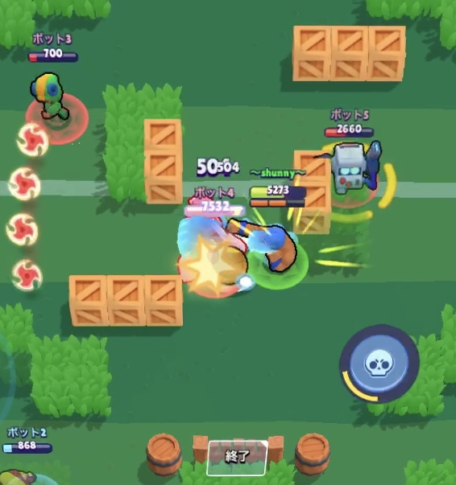
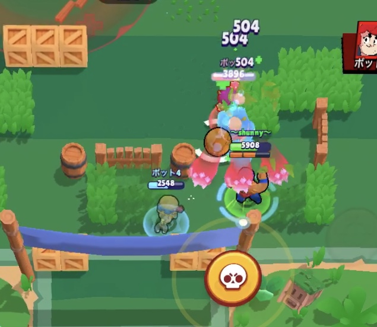
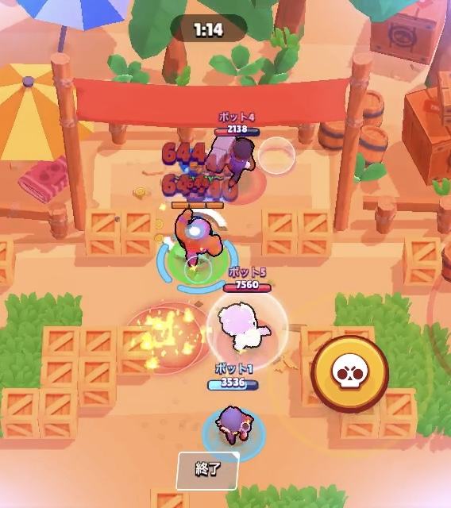
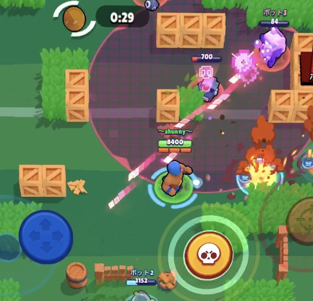
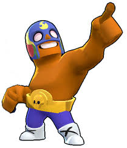
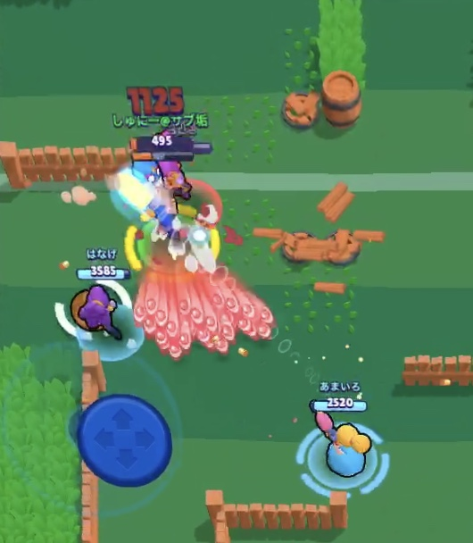
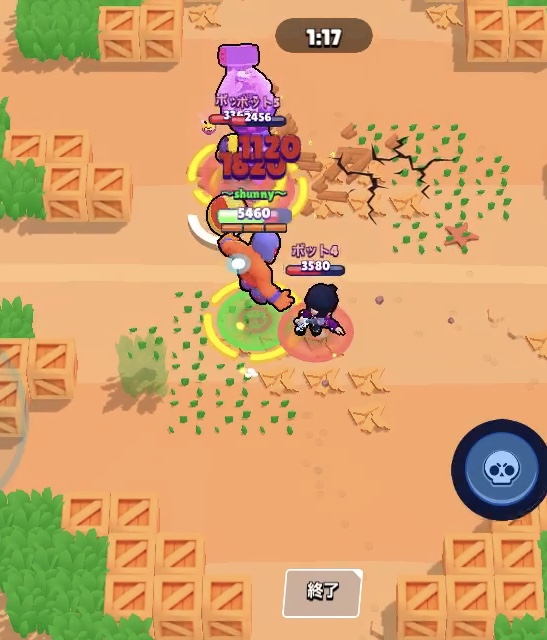
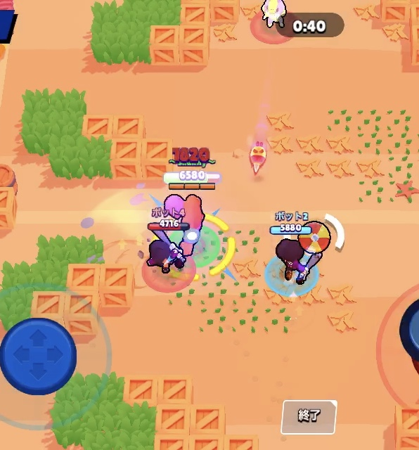
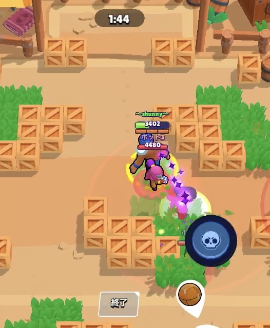

近距離キャラクター とても射程が短い 全てのキャラクターの中で二番目にＨＰが多い
足の速さは普通 ウルトは障害物を飛び越えられる ウルトは障害物を壊せる
まずは敵に近づいて殴ってみよう
敵に近づいて殴ることに慣れてきたら引き打ちを覚えよう！
エル・プリモはゴリ押しができるキャラなので体力がたくさんあるときはボールを持ってそのままゴールを突破してみよう！
次は、ウルトを使って飛んで倒すキャラを決めれるようになろう。基本的にエル・プリモでは中距離・遠距離キャラに近づくことは難しいので ウルトを使って近づこう！！例えば（コルト・ジェシー・ニタ・ダイナマイクなど）
引き打ちができるようになって飛ぶキャラも分かってきたら次は、中長距離・遠距離キャラの弾を避けて、 ウルトなしで近づけるようになろう。これを習得すれば君でもエル・プリモが５００目指せるよ！
エル・プリモのトロフィーが３００以上になったら瞬間加力の高いキャラ（ブル・ウルトを持ったシェリーなど）にはフルボッコにされることがあるので近づかないように立ち回ろう
エル・プリモが上手くなってきたら、こんな技を使ってみよう！ やり方は障害物の前にボールを転がして、その障害物を飛んで壊してシュートしよう！ これが上手くなれば、誰でも確実に一点は決めれるようになるので必ず習得しよう！
トロフィーが高くなっていくと個人プレーだけでは勝てなくなるよ！ だから仲間ボールを持って攻めていたら障害物を壊して道を作ると仲間が決めやすくなって勝率が上がるよ！ できるだけ意識してプレーしよう。
1.シェリーの対処 シェリーのウルトを打たれたらエル・プリモはやられてしまいます。 その時にエル・プリモのウルトでシェリーのウルトを回避しましょう！ やり方は敵のシェリーがウルトを持った時に最短の距離まで近づいた瞬間に飛んで回避をするというものです。
2.フランケンの対処 フランケンのウルトに打たれて当たってしまうと固まりますよね。 フランケンがウルトを打ち斧を振り上げる時にエル・プリモでジャンプして、フランケンに当てると ウルトを無効化できるというものです。
3.ビビの対処 ビビはノックバックをさせられるのでダメージを与えることができません。 なので、ビビのノックバックゲージが繁栄される１リロードを打たれる瞬間に 飛んでビビにあててノックバックさせないようにするとういうことです。
4.タラの対処 タラは、ウルトを打たれて集められると、 やられてしまうので打たれてジュエルが飛んでいる時に 瞬時に反応して、飛びウルトをくらわないようにするとういうものです。

エル・プリモ・ポコ・ＡＬＬ エル・プリモ・ＭＡＸ・ＡＬＬ
エル・プリモ・Ｅｍｚ・ＡＬＬ エル・プリモ・サンディー・ＡＬＬ
エル・プリモ・ビー・ＡＬＬ エル・プリモ・フランケン・ＡＬＬ